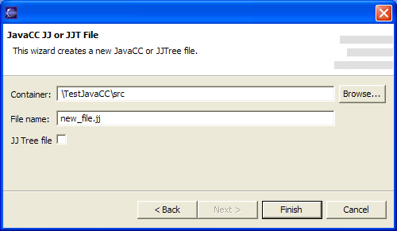
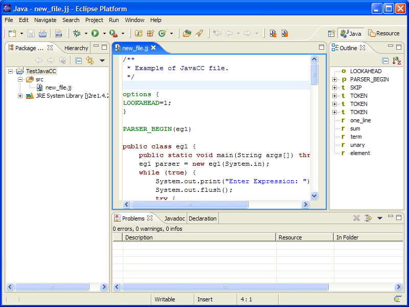
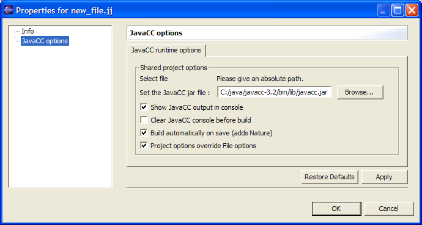
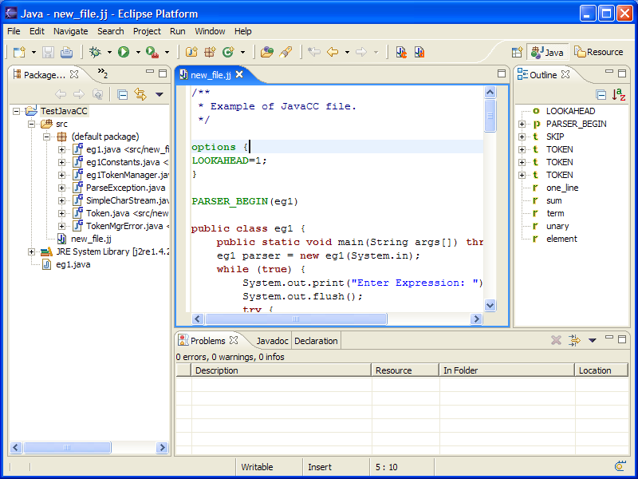
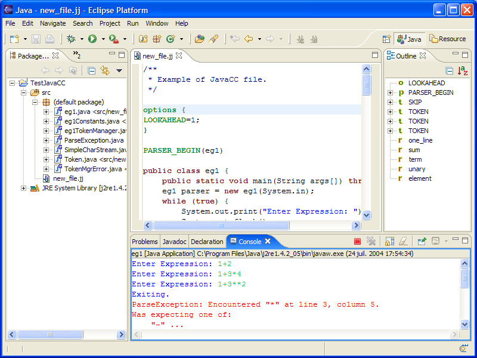
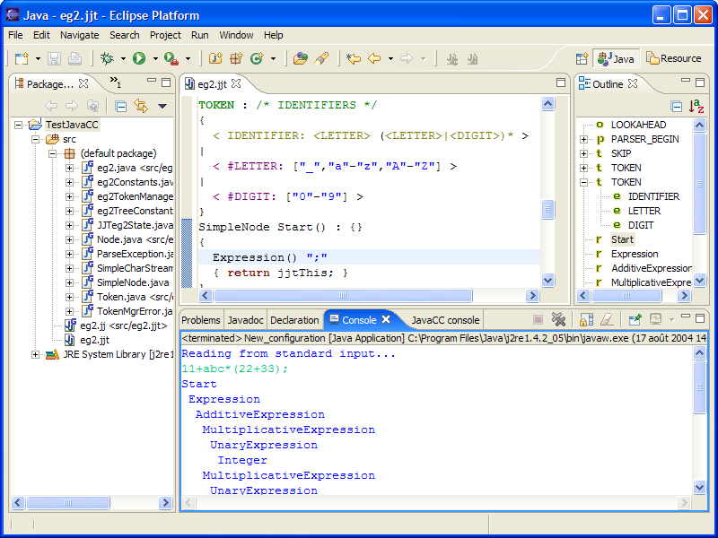

JavaCC plugin is designed to help development of JavaCC
applications.
This plugin provides a set of features, including :
1) To install unzip "sf.eclipse.javacc.1.1.zip" in the "plugins" directory of Eclipse
2) Launch Eclipse
3) Create a new Java Project :
Menu : "File" -> "New" -> "Project..."->
"Java Project"
For the example create a "TestJavaCC" project.
Select "Create separate source and output folders" to
get a "src" folder.
4) Create a new JavaCC file :
Menu "File" -> "New" -> "Other..."
Select Wizard "JavaCC" -> "JavaCC Template file"

Choose the java project you just created "TestJavaCC" and "src" as a container for the new JavaCC file.
5) You have now a new JavaCC file :
To compile you must indicate where your JavaCC is located.
See next step.

6) Set Properties for the project :
Select "TestJavaCC" and right clic ->
"Properties"
Indicate the path to javacc.jar. (which is in
the "bin/lib/" directory of your JavaCC distribution)
Here I use JavaCC version 3.2 (the plugin works also with JavaCC
2.1, 3.0, 3.1,).
Warning : you must set "OUTPUT_DIRECTORY"
= "src" in the "JavaCC options"
tab.
You can also clic on "Restore Defaults" to set that.

7) Compile new_file.jj
If you checked "Build automatically on save"
the files should have been already generated.
If not, you can use the icon on the toolbar, which is active when the the editor
is selected,
or you can rigth clic on the file in the Package Explorer (or
Navigator) and select "Compile with JavaCC".
Note that :
- the generated files are decorated with a "G"
and a "<from.jj>" to indicate
the .jj file they are from,
- if you have not set "OUTPUT_DIRECTORY" = "src"
in the "JavaCC options" tab, the files are generated
outside "src"
directory and have a ligth J as icon which indicate they are
not to be compiled.
- there may be warnings from the Java Compiler (Eclipse don't
like JavaCC generated code),
you can get rid of them selecting "ignore"
in the java compiler options for "Non-static access to
static member:"
- running JJDoc is only possible using the icon on the toolbar.

8) Run the example :
Select "TestJavaCC" and menu "Run"->
"Run as..." -> "Java application"
Choose "eg1" for the main type.
You can now test your JavaCC application :

You can do the same with the template for JJTree :
